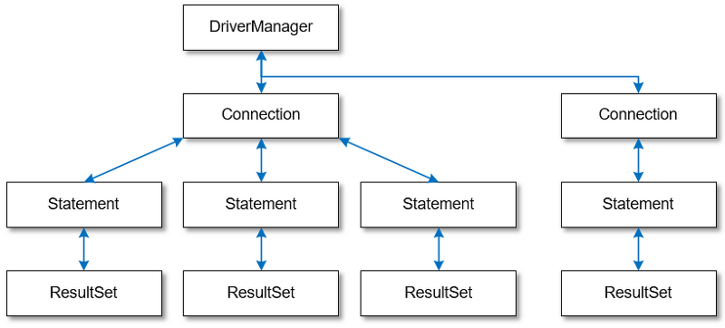
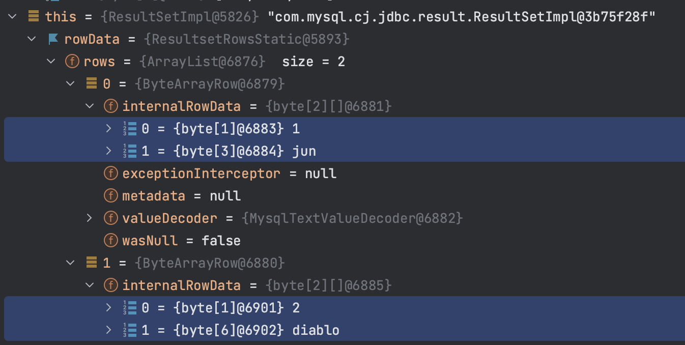

(▲ https://hackmd.io/@ddubson/rkn-sR4wU)
JDBC
-
Java Database Connectivity(JDBC)는 DBMS에 접근하기 위한 Java의 표준 API 스펙
-
JDBC 드라이버 로딩, DBMS 연결, SQL 전송 및 결과 반환 등의 처리
fun main() {
val driver = "com.mysql.cj.jdbc.Driver"
val url = "jdbc:mytsql://localhost:3306/test"
Class.forName(driver).newInstance()
val con: Connection = DriverManager.getConnection(url, "root", "root")
val st: Statement = con.createStatement()
val sql = "SELECT * FROM member"
val rs: ResultSet = st.executeQuery(sql)
while(rs.next()) {
const name = rs.getString(1)
const date = rs.getString(2)
println("$name - $date")
}
rs.close()
st.close()
con.close()
}구성요소

Driver
import java.sql.Driver-
Driver인터페이스를 구현하여 DB와 연결할 JDBC Driver를 만들 수 있음 -
com.mysql:mysql-connector-j와 같은 라이브러리가 해당 DBMS에 맞는 드라이버를 구현함
Connection
import java.sql.Driver
import java.sql.Connection
val con: Connection = if (usingDriverManager) {
// 방법 1 - DriverManager
val driver = "com.mysql.cj.jdbc.Driver"
Class.forName(driver).getDeclaredConstructor().newInstance()
DriverManager.getConnection(url, user, password)
} else {
// 방법 2 - MysqlDataSource
MysqlDataSource().apply {
setUrl(url)
setUser(user)
setPassword(password)
}.connection
}-
특정 DB와의 연결정보를 가지는 인터페이스
-
DriverManager.getConnection()를 통해 JDBC 연결 생성 -
특정 database와 jdbc driver에 의존함
-
연결이 되면
Stagement를 통해 쿼리는 실행할 수 있음
Statement
import java.sql.Statement
val st: Statement = con.createStatement()

PreparedStatement
import java.sql.PreparedStatement-
Statement의 하위 인터페이스 -
SQL을 미리 컴파일하여 실행 속도를 높힘
ResultSet
import java.sql.ResultSet
statement.executeQuery().let { rs: ResultSet ->
Entity(
id = resultSet.getLong(1),
name = resultSet.getString(2),
)
}-
Statement를 통한 쿼리 실행 결과에 사용되는 인터페이스
동작 분석
어떻게 데이터를 ResultSet 에 가져오는가?
-
mysql testcontainer 사용한 test case에서 디버깅해봤을 때
-
ResultSet의 구현체는com.mysql.cj.jdbc.result.ResultSetImpl사용함 -
쿼리 실행시
rowData: ResultsetRows(실제 인스턴스는ResultsetRowsStatic)필드의rows에Row인스턴가 저장되어 있음Row인스턴스는ByteArrayRow이고,internalRowData가 byte-array를 가지고 있음
-
DB와 무언가를 통한 통신을 통해 데이터를 byte array로 가져와서 저장하는 것으로 보임.
-
TODO: cursor는 그럼 어떻게 동작할까?
// MySQL에서 이 설정이 있다면 스트리밍 방식으로 읽는 듯 // https://dev.mysql.com/doc/connector-j/8.0/en/connector-j-reference-implementation-notes.html val stmt = con.createStatement( java.sql.ResultSet.TYPE_FORWARD_ONLY, java.sql.ResultSet.CONCUR_READ_ONLY, ).apply { fetchSize = Integer.MIN_VALUE }
-
-
ConnectionPool
-
일정량의 Connection 인스턴스를 미리 만들어서 pool에 저장해두고 사용하기 위함
-
HikariCP
-
DBCP(Database Connection Pool) 라이브러리
val config = HikariConfig().apply { jdbcUrl = url username = user this.password = password } val ds = HikariDataSource(config) val con: Connection = ds.connection
-
spring-jdbc
org.springframework.boot:spring-jdbc:5.2.9.RELEASE > org.springframework:spring-beans:5.2.9.RELEASE > org.springframework:spring-core:5.2.9.RELEASE > org.springframework:spring-tx:5.2.9.RELEASE
-
JDBC에서 처리하는 데이터베이스 관련 작업들을 스프링 프레임워크로 위임하고, 별도 API를 통해 데이터베이스 연결 및 쿼리 실행을 함.
구성요소
@startuml
hide empty field
hide empty method
interface JdbcOperations {
query(psc, rowMapper): List<T>
}
class JdbcTemplate
interface NamedParameterJdbcOperations
class NamedParameterJdbcTemplate {
-classicJdbcTemplate: JdbcOperations
}
abstract class JdbcAccessor {
-dataSource: DataSource
}
JdbcOperations <|-- JdbcTemplate
JdbcAccessor <|-- JdbcTemplate
NamedParameterJdbcOperations <|-- NamedParameterJdbcTemplate
NamedParameterJdbcTemplate --> JdbcOperations
@enduml
JdbcTemplate
-
DataSource를 생성하고JdbcTemplate에 주입하여 사용. -
JdbcTemplate를 통해 JDBC를 편리하게 사용할 수 있음. -
JdbcTemplate: 가장 저수준에서 동작하며, Spring 내부적으로JdbcTemplate을 사용함-
thread-safe 하므로, DAO등에서 맴버 변수로 저장.
DataSource만 외부에서 유입받아 초기화해둘 수 있음.
-
NamedParameterJdbcTemplate
-
NamedParameterJdbcTemplate:JdbcTemplate을 래핑해서?가 아닌 이름이 붙은 파라미터 사용할 수 있게함.
RowMapper
-
RowMapper:ResultSet(쿼리 결과)에서 원하는 객체로 타입을 변환하는 역할 -
BeanPropertyRowMapper
-
DataClassRowMapper
-
spring-boot-starter-jdbc
org.springframework.boot:spring-boot-starter-jdbc:2.3.4.RELEASE > com.zaxxer:HikariCP:3.4.5 > org.springframework.boot:spring-boot-starter:2.3.4.RELEASE > org.springframework:spring-jdbc:5.2.9.RELEASE
-
spring-jdbc에 대하여 스프링부트 의존성 관리를 한번에 하고자 wrapping된 모듈.
ORM
-
ORMObject Relational Mapping
-
TODO
spring-data-jdbc
org.springframwork.data:spring-data-jdbc:2.0.4.RELEASE > org.slf4j-api:1.7.30 > org.springframework.data:spring-data-commons:2.3.4.RELEASE > org.springframework.data:spring-data-relational:2.0.4.RELEASE > org.springframework:spring-beans:5.2.9.RELEASE > org.springframework:spring-context:5.2.9.RELEASE > org.springframework:spring-core:5.2.9.RELEASE > org.springframework:spring-jdbc:5.2.9.RELEASE > org.springframework:spring-tx:5.2.9.RELEASE
-
Spring Data의 미션은 데이터 액세스를 위해 친숙하고 일관된 Spring 기반의 프로그래밍 모델을 제공하는 동시에 기본 데이터 저장소의 특수한 특성을 유지하는 것.
-
spring data repository 추상화의 목표는 데이터 액세스 레이어를 구현하는 데 필요한 상용구 코드의 양을 줄이는 것
-
Spring Data JDBC는 Spring Data의 여러 모듈중 하나로, 말 그대로 JDBC를 지원하는 모듈.
-
뭔가 문서가 JPA인것 같은데…? 엔티티매니저 가지고 더티체킹하는게 큰 차이?
-
-
CrudRepository를 활용하여 기본적인 CRUD 구현을 쉽게 함. -
중신에
Repository인터페이스가 있고,CrudRepository,ListCurdRepository인터페이스와 같이 엔티티 클래스에 대한 정교한 CURD기능을 제공-
CurdRepository인터페이스는Iterable반환 -
ListCurdRepository인터페이스는List반환
-
구성요소
@startuml
hide empty field
hide empty method
interface Repository
interface CurdRepository {
save(eneity: S)
saveAll(entities: Iterable<S>)
findById(id: ID)
existsById(id: ID)
findAll()
findAllById(ids: Iterable<ID>)
count()
deleteById(id: ID)
delete(entity: T)
deleteAllById(ids: Iterable<? extends ID>)
deletaAll(entities: Iterable<? extends T>)
deleteAll()
}
interface PagingAndSortingRepository {
findAll(sort: Sort): Iterable<T>
findAll(pageable: Pageable): Page<T>
}
class SimpleJdbcRepository
interface JdbcAggregateOperations
class JdbcAggregateTemplate
Repository <|-- CurdRepository
CurdRepository <|-- SimpleJdbcRepository
PagingAndSortingRepository <|-- SimpleJdbcRepository
SimpleJdbcRepository ..> JdbcAggregateOperations
interface DataAccessStrategy
interface JdbcConverter
JdbcAggregateOperations <|-- JdbcAggregateTemplate
JdbcAggregateTemplate ..> DataAccessStrategy
JdbcAggregateTemplate ..> JdbcConverter
@enduml
Repository
CurdRepository
EntityRowMapper
-
spring-jdbc의 RowMapper의 구현체
JdbcConverter
JdbcValue
spring-boot-starter-data-jdbc
org.springframework.boot:spring-boot-starter-data-jdbc:2.3.4.RELEASE > org.springframework.boot:spring-boot-starter-jdbc:2.3.4.RELEASE > org.springframework.data:spring-data-jdbc:2.0.4.RELEASE
spring-jdbc-plus
-
네이버에서 제공하는 Spring Data JDBC 확장 라이브러리.
References
-
JdbcTemplate:
-
JdbcOperation: 구현체
-
NamedParameterJdbcTemplate
-
TransactionManager
-
TransactionTemplate
-
DataAccessStrategy
findById
-
CrudRepository구현체인SimpleJdbcRepository-
JdbcAggregateOperations필드의findById메서드 실행됨 -
JdbcAggregateOperations구현체인JdbcAggregateTemplate-
DataAccessStrategy필드의findById메서드 호출-
DataAccessStrategy구현체인DefaultDataAccessStrategy -
SqlGeneratorSource필드의getSqlGenerator메서드 통해서 쿼리 생성 -
SqlParamgersFactory필드의forQueryById메서드 통해서 쿼리 파라미터 생성 -
getEntityRowMapper메서드 통해RowMapper생성 -
operations: NamedParameterJdbcOperations필드의queryForObject메서드 통해서 쿼리 실행 (w/ rowMapper)-
converter: JdbcConverter필드의query메서드 호출 -
execute메서드 호출 -
DateSourceUtils.getConnection(DataSource)메서드 통해서Connection생성 -
doInPreparedStatement실행-
PreparedStatement#executeQuery메서드 통해서ResultSet생성-
update -
AbstractQueryProtocol#executeQuery -
ComQuery.sendSubCmd
-
-
-
쿼리 결과인
result생성
-
-
-
triggerAfterConvert메서드 실행
-
-
-
실제 DB로부터 어떻게 값이 오는지?
-
reading converter가 동작할 수 있는지?
-
spring batch에서 cursor는 어떻게?